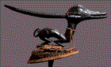
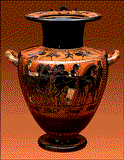
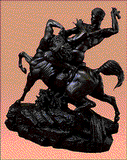
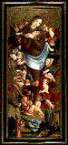
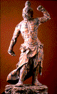
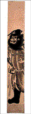

<!--This file created 10/16/97 5:44 PM by Claris Home Page version 2.0-->
<HTML>
<HEAD>
   <TITLE>Mpls Inst Arts - World Mythology: Hero Myths</TITLE>
   <META NAME="GENERATOR" CONTENT="Claris Home Page 2.0">
   <X-SAS-WINDOW TOP="139" BOTTOM="480" LEFT="44" RIGHT="574">
<HEAD>
</HEAD>
<BODY TEXT="#111111" LINK="#660000" ALINK="#AA0000" VLINK="#444444" BACKGROUND="backgroundbrown.gif">

<P><FONT SIZE="+2">Curriculum Materials: World Mythology</FONT>
<HR>
</CENTER><TABLE BORDER="3" WIDTH="445">
   <TR>
      <TD>
         <P><CENTER><A HREF="introduction.html#top">Introduction</A>
         ~ <A HREF="mythbyimage.html">Myth by Image</A> ~
         <A HREF="culturelist.html">Myth by Culture</A> ~
         <A HREF="myths.html">Mythological Comparisons</A> ~
         <A HREF="glossary.html">Glossary</A> ~
         <A HREF="suggestedreading.html#top">Suggested Readings</A> ~
         <A HREF="downloadables.html#top">Downloadable Resources</A>
         ~ <A HREF="../tta/classroom_materials_order.html">How to Order</A> ~
         <A HREF="myth_evaluation.html#top">Your Comments Wanted</A>
         </CENTER>
      </TD></TR>
</TABLE>
<HR>
<A NAME="top"></A>&nbsp;</P>

<P><CENTER><FONT SIZE="+2">Hero Myths</FONT></CENTER></P>

<P><!-- Myth By Image Table--></P>

<P><CENTER><TABLE BORDER="3" CELLSPACING="0" CELLPADDING="5" WIDTH="445">
   <TR>
      <TD VALIGN="top" WIDTH="160">
         <P><CENTER><A HREF="slide1.html#top"><BR>
         
         <BR>
         
         <FONT SIZE="-2">Image 1<BR>
         
         Egypt<BR>
         
         Mummy Case of Lady Teshat<BR>
         
         1085-710 B.C.</A></FONT></CENTER>
      </TD><TD VALIGN="top" WIDTH="160">
         <P><CENTER><A HREF="slide2.html#top"><BR>
         
         <BR>
         
         <FONT SIZE="-2">Image 2<BR>
         
         Egypt<BR>
         
         Thoth<BR>
         
         664-525 B.C. (26th Dynasty)</A></FONT></CENTER>
      </TD><TD VALIGN="top" WIDTH="160">
         <P><CENTER><A HREF="slide3.html#top"><BR>
         
         <BR>
         
         <FONT SIZE="-2">Image 3</A></FONT><FONT SIZE="-2"><BR>
         
         </FONT><FONT SIZE="-2"><A HREF="slide3.html#top">Egypt<BR>
         
         Statuette of Isis<BR>
         
         1st century A.D.</A></FONT></CENTER>
      </TD></TR>
   <TR>
      <TD VALIGN="bottom" WIDTH="160">
         <P><CENTER><A HREF="slide4.html#top"><BR>
         
         <BR>
         
         <FONT SIZE="-2">Image 4<BR>
         
         Nigeria (Edo)<BR>
         
         Memorial Tusk<BR>
         
         Late 18th-early 19th century (Kingdom of Benin)</A></FONT>
         </CENTER>
      </TD><TD VALIGN="bottom" WIDTH="160">
         <P><CENTER><A HREF="slide6.html#top"><BR>
         
         <BR>
         
         <FONT SIZE="-2">Image 6<BR>
         
         Mali (Bamana)<BR>
         
         Antelope Headdress<BR>
         
         20th century</A></FONT></CENTER>
      </TD><TD VALIGN="bottom" WIDTH="160">
         <P><CENTER><A HREF="slide7.html#top"><BR>
         
         <BR>
         
         <FONT SIZE="-2">Image 7<BR>
         
         Antimenes painter<BR>
         
         Greece<BR>
         
         Hydria<BR>
         
         530-500 B.C.</A></FONT></CENTER>
      </TD></TR>
   <TR>
      <TD VALIGN="bottom" WIDTH="160">
         <P><CENTER><A HREF="slide10.html#top"><BR>
         
         <BR>
         
         <FONT SIZE="-2">Image 10<BR>
         
         Antoine-Louis Barye<BR>
         
         France, 1796-1875<BR>
         
         Theseus Slaying a Centaur<BR>
         
         About 1855</A></FONT></CENTER>
      </TD><TD VALIGN="bottom" WIDTH="160">
         <P><CENTER><A HREF="slide12.html#top"><BR>
         
         <BR>
         
         <FONT SIZE="-2">Image 12<BR>
         
         Emile-Antoine Bourdelle<BR>
         
         France (1861-1929)<BR>
         
         Door Knocker in Form of Medusa<BR>
         
         1925</A></FONT></CENTER>
      </TD><TD VALIGN="bottom" WIDTH="160">
         <P><CENTER><A HREF="slide13.html#top"><BR>
         
         <BR>
         
         <FONT SIZE="-2">Image 13<BR>
         
         Austria<BR>
         
         Saint Catherine of Alexandria<BR>
         
         1450-60</A></FONT></CENTER>
      </TD></TR>
   <TR>
      <TD VALIGN="bottom" WIDTH="160">
         <P><CENTER><A HREF="slide14.html#top"><BR>
         
         <BR>
         
         <FONT SIZE="-2">Image 14<BR>
         
         Peter Strub the Younger (Master of Messkirch)<BR>
         
         Germany, active 1530-43<BR>
         
         The Elevation of the Magdalen<BR>
         
         16th century</A></FONT></CENTER>
      </TD><TD VALIGN="bottom" WIDTH="160">
         <P><CENTER><A HREF="slide16.html#top"><BR>
         
         <BR>
         
         <FONT SIZE="-2">Image 16<BR>
         
         Grant Wood<BR>
         
         United States (1891-1942)<BR>
         
         The Birthplace of Herbert Hoover, West Branch, Iowa<BR>
         
         1931</A></FONT></CENTER>
      </TD><TD VALIGN="bottom" WIDTH="160">
         <P><CENTER><A HREF="slide17.html#top"><BR>
         
         <BR>
         
         <FONT SIZE="-2">Image 17<BR>
         
         United States (Navajo)<BR>
         
         Ketoh (Wrist Guard)<BR>
         
         About 1930</A></FONT></CENTER>
      </TD></TR>
   <TR>
      <TD VALIGN="bottom" WIDTH="160">
         <P><CENTER><A HREF="slide20.html#top"><BR>
         
         <BR>
         
         <FONT SIZE="-2">Image 20<BR>
         
         Papua New Guinea (New Ireland)<BR>
         
         Malagan Pole<BR>
         
         19th century</A></FONT></CENTER>
      </TD><TD VALIGN="bottom" WIDTH="160">
         <P><CENTER><A HREF="slide23.html#top"><BR>
         
         <BR>
         
         <FONT SIZE="-2">Image 23<BR>
         
         Japan<BR>
         
         Nio Guardian Figures<BR>
         
         About 1360</A></FONT></CENTER>
      </TD><TD VALIGN="bottom" WIDTH="160">
         <P><CENTER><A HREF="slide24.html#top"><BR>
         
         <BR>
         
         <FONT SIZE="-2">Image 24<BR>
         
         Japan<BR>
         
         Shoki, the Demon Queller<BR>
         
         18th century</A></FONT></CENTER>
      </TD></TR>
</TABLE></CENTER></P>

<P></TR></TABLE><!--------Bottom Menu------></P>

<P></CENTER><TABLE BORDER="3" WIDTH="445">
   <TR>
      <TD>
         <P><CENTER><A HREF="introduction.html#top">Introduction</A>
         ~ <A HREF="mythbyimage.html">Myth by Image</A> ~
         <A HREF="culturelist.html">Myth by Culture</A> ~
         <A HREF="myths.html">Mythological Comparisons</A> ~
         <A HREF="glossary.html">Glossary</A> ~
         <A HREF="suggestedreading.html#top">Suggested Readings</A> ~
         <A HREF="downloadables.html#top">Downloadable Resources</A>
         ~ <A HREF="../tta/classroom_materials_order.html">How to Order</A> ~
         <A HREF="myth_evaluation.html#top">Your Comments Wanted</A>
         </CENTER>
      </TD></TR>
</TABLE></P>
</BODY>
</HTML>
